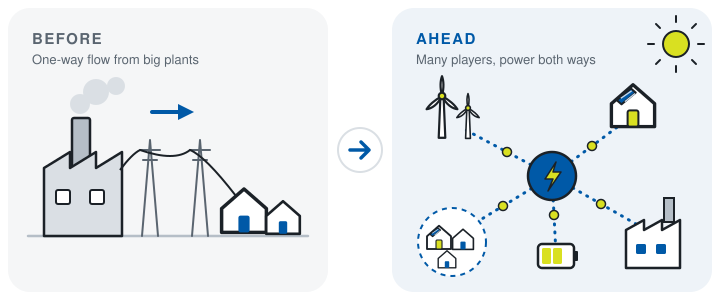
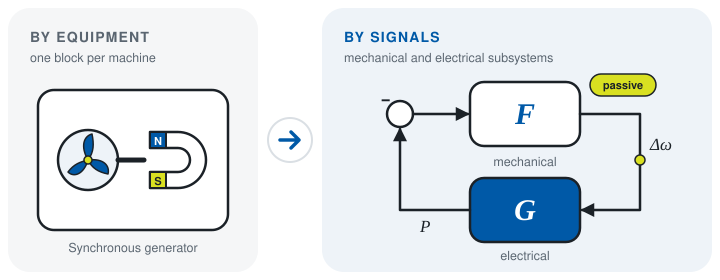
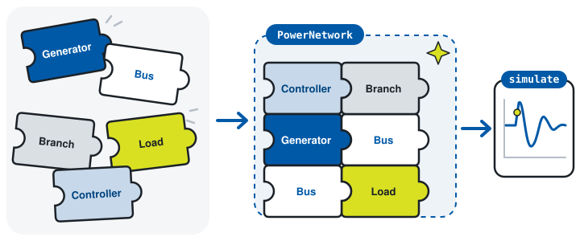
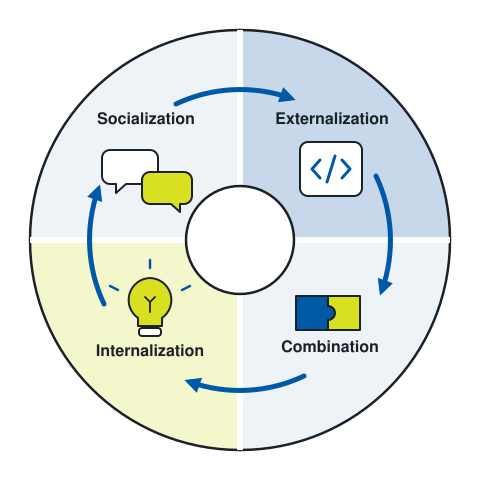
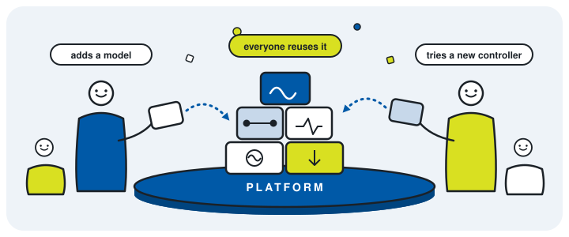
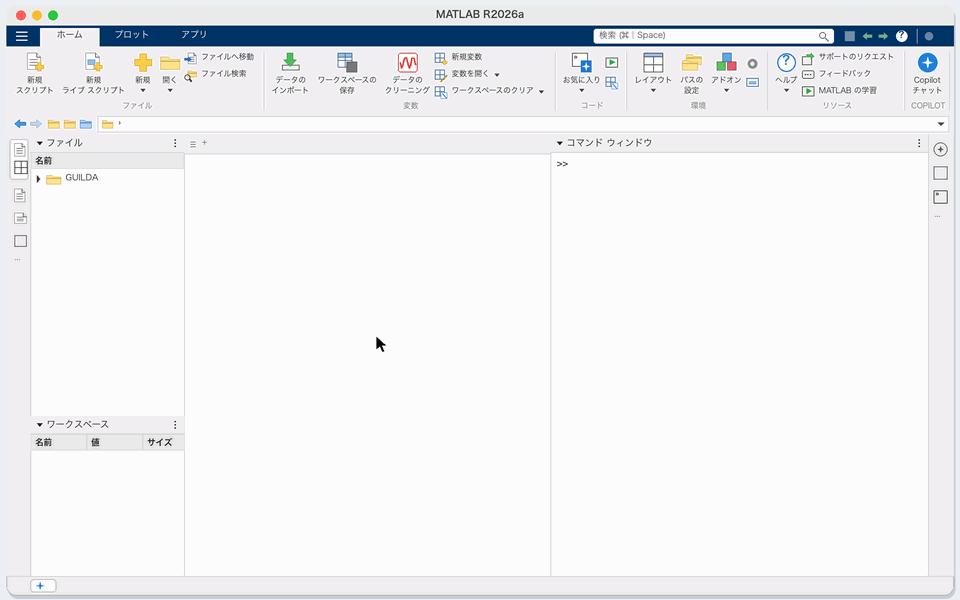
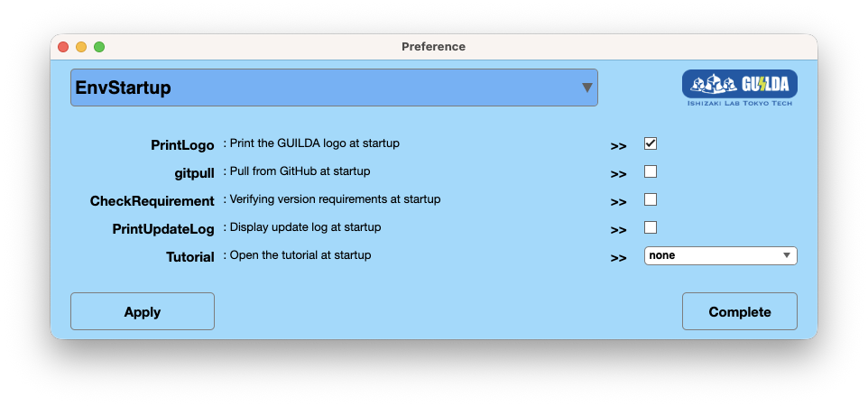
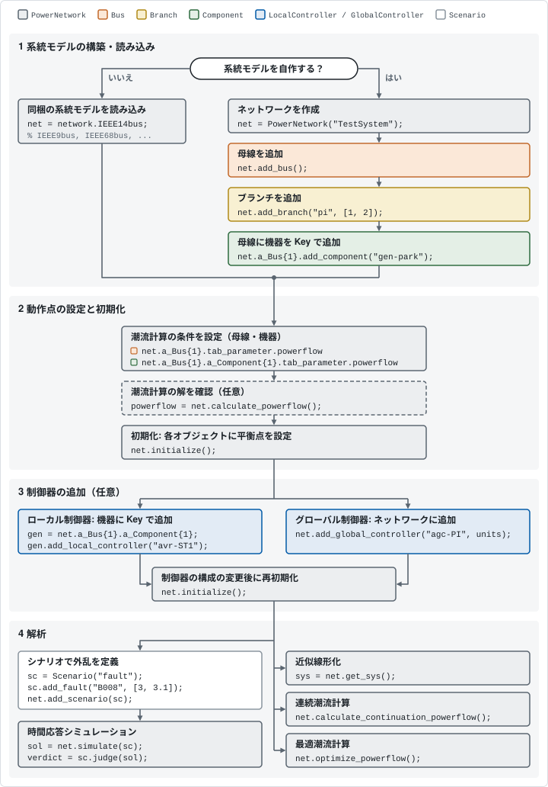
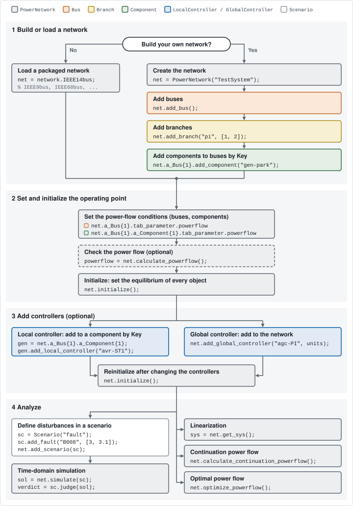

GUILDA DocumentationGUILDA ドキュメント
Grid & Utility Infrastructure Linkage Dynamics Analyzer
A MATLAB power-system simulator for students and researchers in systems and control. Combine blocks into models, then analyse and share them.
システム制御を学ぶ学生や研究者に向けた、MATLAB で動く電力系統シミュレータです。部品を組み合わせてモデルを作り、解析したり共有したりできます。
Supported Analyses対応する解析
-
Tutorialチュートリアル
RMS phasor models実効値フェーザモデル
Three-phase balanced networks in the RMS phasor representation: voltages and currents are complex phasors of their RMS values at the fundamental frequency, the network is a set of algebraic equations, and the dynamics are those of the generators, loads and controllers.
三相平衡の電力系統を、実効値（RMS）のフェーザで表します。電圧と電流は基本周波数の複素フェーザとして扱い、送電網は代数方程式で表します。動的な振る舞いは、発電機、負荷、制御器のモデルが受け持ちます。
Load a standard model, such as the IEEE test systems (
network.IEEE9bus,IEEE14bus,IEEE39Bus,IEEE68bus) or the IEEJ standard models (network.IEEJ_EAST10,IEEJ_EAST30,IEEJ_WEST10,IEEJ_WEST30), or build a network of your own configuration from buses, branches and components.IEEE の試験系統（
network.IEEE9bus、IEEE14bus、IEEE39Bus、IEEE68bus）や電気学会の標準モデル（network.IEEJ_EAST10、IEEJ_EAST30、IEEJ_WEST10、IEEJ_WEST30）を、すぐに読み込めます。母線、ブランチ、機器を自分で組み合わせて、独自の構成の系統を作ることもできます。 -
Tutorialチュートリアル
Time-domain simulation時間応答シミュレーション
Responses to faults, load and input changes, and initial-value perturbations.地絡や負荷・入力の変化、初期値の摂動に対して、系統がどう応答するかを計算します。
-
Tutorialチュートリアル
Linear analysis線形解析
Linearize the network around an operating point into Eẋ = Ax + Bu, y = Cx + Du, and analyse small-signal stability from its eigenvalues. The matrices A, B, C, D and E come with the names of the states, inputs and outputs, so they can be used for further linear analyses such as kernel analysis.
動作点のまわりで系統を近似線形化し、Eẋ = Ax + Bu、y = Cx + Du の形のモデルを得ます。固有値を調べれば、定態安定性を評価できます。行列 A、B、C、D、E には状態・入力・出力の変数名が付いているので、カーネル解析など、ほかの線形解析にもそのまま使えます。
-
Continuation power flow連続潮流計算
Trace the nose (PV) curve with
net.calculate_continuation_powerflowby raising the loads of chosen buses, and find the maximum loading point to assess voltage stability.net.calculate_continuation_powerflowを使うと、選んだ母線の負荷を少しずつ増やしながら潮流解をたどり、PV カーブ（ノーズカーブ）を描けます。最大負荷点がわかるので、電圧安定性の評価に使えます。 -
Optimal power flow最適潮流計算
General formulations of OPF problems on the same network.同じ系統モデルを使って、一般的な形で定式化した最適潮流計算問題を解けます。
-
Tutorialチュートリアル
Controller design from scriptsスクリプトによる制御器設計
Design controllers in MATLAB scripts, for example an LQR gain from the linear model, attach them as local or global controllers, then simulate or linearize the network to evaluate them.
制御器は MATLAB のスクリプトで設計できます。たとえば線形モデルから LQR のゲインを求め、ローカル制御器やグローバル制御器として系統に取り付けます。そのうえでシミュレーションや近似線形化を行い、効果を確かめます。
-
Tutorialチュートリアル
Graph & animationグラフとアニメーション
Network graphs whose node heights and colours follow the response.応答に合わせてノードの高さと色が変わる、系統のグラフを描けます。
Update Log更新履歴
Licenseライセンス
GUILDA is released under the MIT License. Details: the LICENSE file at the repository root.
GUILDA は MIT ライセンスで公開しています。詳細はリポジトリのルートにある LICENSE ファイルを参照してください。
Developers開発者
GUILDA is developed by the Ishizaki Laboratory, Institute of Science Tokyo. It continues power_simulator, developed by Takahiro Kawaguchi (Gunma University).
東京科学大学 石崎研究室が開発しています。前身は川口貴弘先生（群馬大学）が開発した power_simulator で、GUILDA はこれを引き継いでいます。
About GUILDAGUILDA について
Power-system knowledge, in the language of systems and control.電力系統の知識を、システム制御の言葉で。
01 Why it mattersなぜ必要か
Future grids are a control problemこれからの電力系統は制御の問題
Decarbonisation changes who takes part in the grid.脱炭素化によって、電力系統に参加する主体が変わりつつあります。
- Before:かつて: Power flowed one way, from large plants to consumers.電力は大規模な発電所から需要家へ一方向に流れていました。
- Now:いま: Wind and solar plants, homes with rooftop PV, batteries and microgrids join in; many of them are controllable.風力発電所や太陽光発電所、屋根に太陽光パネルを載せた家庭、蓄電池、マイクログリッドも加わっています。その多くは制御できます。
- Need:課題: A stable supply means steering that flow, where control engineering can help.安定して電力を供給するには、この流れを制御する必要があります。ここで制御工学が役立ちます。
Yet the two fields frame problems differently.ところが、二つの分野では問題の捉え方が違います。
- Power-system and power-electronics tools:電力系統・パワーエレクトロニクスのツール: Detailed models, fast computation, faithful reproduction of real events, one module per piece of equipment.詳細なモデルを高速に計算し、実際の現象を忠実に再現します。モジュールは機器ごとに一つです。
- Control engineering:制御工学: Models that capture the essential dynamics, and the principles that follow from them.本質的なダイナミクスだけを捉えたモデルと、そこから導かれる原理を大切にします。
Learning the power domain well enough to bridge that gap takes a lot of time.この溝を埋めるほど電力分野を学ぶには、かなりの時間がかかります。

02 What GUILDA isGUILDA とは
A simulator built for systems and controlシステム制御のためのシミュレータ
- A power-system simulator for students and researchers in systems and control.システム制御を学ぶ学生や研究者のための電力系統シミュレータです。
- Brings power-system knowledge into control engineering, so you can study grids with the tools and questions of our own field.電力系統の知識を制御工学の側に持ち込みます。そのため、自分たちの分野の道具と問いのまま電力系統を研究できます。
- Closely linked with the textbook 「電力系統のシステム制御工学」 (Systems Control Engineering of Power Systems), which explains power systems from the viewpoint of control and uses GUILDA for its numerical examples.教科書「電力系統のシステム制御工学」と密接に連携しています。この教科書は電力系統を制御の視点から解説しており、数値例の計算に GUILDA を使っています。
03 Design goals設計目標
Three things GUILDA is designed to doGUILDA が目指す三つのこと
-
1
Usable by power-system beginners電力系統の初学者でも使える
Real analyses without deriving admittance matrices, operating points or the grid's differential-algebraic equations yourself.アドミタンス行列や動作点、系統全体の微分代数方程式を自分で導かなくても、本格的な解析ができます。
-
2
Reveal structure and properties構造と性質を明らかにする
Tutorials, graphs, animations and linearized models show why the system behaves as it does, not only what it does.チュートリアル、グラフ、アニメーション、線形化モデルを通して、系統がどう振る舞うかだけでなく、なぜそう振る舞うかもわかります。
-
3
Split models by signals信号でモデルを分割する
Split by physical signals such as frequency and power, not only by equipment, so control-theoretic analyses fit naturally.機器ごとだけでなく、周波数や電力といった物理信号でもモデルを分けられます。そのため、制御理論に基づく解析と無理なく組み合わせられます。

Example: passivity-based stability analysis.例として、受動性に基づく安定性解析を紹介します。
- The always-passive mechanical parts form one subsystem F, in feedback with the electrical subsystem G.常に受動的な機械系をまとめてサブシステム F とし、電気系のサブシステム G とフィードバック結合しているとみなします。
- If G is passive, so is the whole system: the analysis can focus on G.G が受動的なら、システム全体も受動的になります。そのため、解析の対象を G に絞れます。
- A tool that offers only one block per machine cannot express this split.発電機ごとに一つのブロックしか持たないツールでは、この分割を表現できません。
04 How it works仕組み
Building blocks that snap together組み合わせて使える部品
- Object-oriented: buses, branches, generators, loads and controllers are classes that fit together like puzzle pieces into a
PowerNetwork.GUILDA はオブジェクト指向で作られています。母線、ブランチ、発電機、負荷、制御器はそれぞれクラスになっていて、パズルのピースのように組み合わせるとPowerNetworkができあがります。 - The network handles the electrical constraints and the interactions between devices, so you go straight to simulating, linearizing and plotting.電気的な制約や機器どうしの相互作用は、ネットワーク側で処理します。そのため、すぐにシミュレーション、近似線形化、プロットに取りかかれます。

% Snap the pieces together
net = PowerNetwork("TestSystem");
net.add_bus();
net.add_bus();
net.add_branch("pi", [1, 2]);
net.a_Bus{1}.add_component("gen-park");
net.a_Bus{2}.add_component("load-power");
% Or start from a packaged network and analyse it
net = network.IEEE14bus;
sc = Scenario("fault"); sc.add_fault("B008", [3, 3.1]);
net.add_scenario(sc);
sol = net.simulate([0, 50], sc); % time response
sys = net.get_sys(); % linearized model05 Vision for the future将来のビジョン
A platform where knowledge keeps growing知識が育ち続けるプラットフォーム
Research know-how often lives in one person's head and leaves with them. GUILDA aims to be a knowledge platform built on the SECI knowledge spiral of Ikujiro Nonaka, where tacit and explicit knowledge keep turning into each other:
研究のノウハウは一人の頭の中にとどまりやすく、その人がいなくなると失われがちです。GUILDA は、野中郁次郎の SECI モデル（知識スパイラル）に基づく知識プラットフォームを目指しています。 そこでは、暗黙知と形式知が互いに移り変わり続けます。
- Socialization共同化 Share experience and progress in meetings and discussions.ミーティングや議論で、経験や進み具合を共有します。
- Externalization表出化 Write what you learned as models and analyses with clear interfaces.学んだことを、明確なインタフェースを持つモデルや解析として記述します。
- Combination連結化 Connect those objects on the platform into new analyses.それらのオブジェクトをプラットフォーム上でつなぎ、新しい解析を組み立てます。
- Internalization内面化 Use the platform in your own research and gain new insight.プラットフォームを自分の研究に使い、新しい知見を得ます。
- Each turn of the spiral leaves something reusable behind, so knowledge is not tied to individuals and keeps growing.スパイラルが一回りするたびに、再利用できるものが残ります。そのため知識は個人に縛られず、育ち続けます。
- The name echoes a guild: a circle of researchers and engineers who learn from one another and build together.名前はギルドに由来します。互いに学び合い、一緒にものを作り上げる研究者と技術者の集まりのことです。


06 Compared with others他ツールとの比較
Where GUILDA standsGUILDA の位置づけ
| Analysis解析の種類 | Typical analysis package一般的な解析パッケージ | GUILDA |
|---|---|---|
| Power flow潮流計算 | ✓ | ✓ |
| Small-signal stability via linearization近似線形化による微小信号安定性 | ✓ | ✓ |
| Time-domain (transient) response時間応答（過渡応答） | ✓ | ✓ |
| Interfaces for control engineering制御工学向けのインタフェース | Limited限定的 | Core focus中心的な目標 |
Based on Table 1 of the article below, which compares GUILDA with CPAT, a power-system analysis package widely used in Japan. CPAT also offers fault and harmonic calculations; GUILDA does not target them.
下記の記事の表 1 をもとにした比較です。比較の相手は、国内で広く使われている電力系統解析パッケージ CPAT です。CPAT は故障計算や高調波計算もできますが、GUILDA はこれらを対象にしていません。
Books and articles書籍・記事
- T. Ishizaki, T. Kawaguchi and K. Kawabe,石崎孝幸・川口貴弘・河辺賢一 著、 「電力系統のシステム制御工学 – システム数理と MATLAB シミュレーション –」, Corona Publishing (in Japanese). The textbook explains power systems in the language of systems and control and uses GUILDA for its numerical examples.、コロナ社。 電力系統をシステム制御の言葉で解説した教科書です。数値例の計算に GUILDA を使っています。
- T. Nishino, T. Kawaguchi and T. Ishizaki, 「GUILDA：エネルギーナレッジマネジメントのはじめの一歩」, 計測と制御, Vol. 62, No. 9, pp. 559–563, 2023 (in Japanese).
- Introductory article紹介記事, 計測と制御, Vol. 62, No. 10 (in Japanese, PDF).
How to cite引用方法
If you use GUILDA in published work, cite the article that introduces it:
GUILDA を用いた成果を発表するときは、GUILDA を紹介した次の記事を引用してください。
T. Nishino, T. Kawaguchi and T. Ishizaki, "GUILDA: エネルギーナレッジマネジメントのはじめの一歩,"
計測と制御, Vol. 62, No. 9, pp. 559–563, 2023.Getting Startedはじめに
Install GUILDAGUILDA のインストール
Clone or download the repository from GitHub, or open it directly in MATLAB Online.
GitHub からリポジトリをクローンするか、ダウンロードしてください。MATLAB Online で直接開くこともできます。

Requirements動作環境
GUILDA runs on MATLAB alone; each toolbox is needed only by the features marked below.
GUILDA は MATLAB だけで動きます。Toolbox が必要になるのは、下の表で印の付いた機能を使うときだけです。
| Feature機能 | MATLABR2025a or laterR2025a 以降 | Optimization Toolbox | Control System Toolbox | Symbolic Math Toolbox |
|---|---|---|---|---|
Power flow潮流計算Steady-state voltages and power flows定常状態の電圧・電力潮流net. | ||||
Newton-Raphson method (default)ニュートン・ラフソン法（既定）Solver="newton" | ✓ | – | – | – |
Gradient method勾配法Solver="gradient" | ✓ | – | – | – |
Levenberg-Marquardt methodレーベンバーグ・マーカート法Solver= | ✓ | – | – | – |
Virtual bus dynamics (time integration)仮想母線ダイナミクス（時間積分）Solver="dynamic" | ✓ | – | – | – |
MATLAB fsolveMATLAB の fsolveSolver="fsolve" | ✓ | ✓ | – | – |
Continuation power flow (CPF)連続潮流計算（CPF）Voltage stability: the nose (PV) curve電圧安定性・PV 曲線net. | ✓ | – | – | – |
Optimal power flow (OPF)最適潮流計算（OPF）Generation dispatch that minimizes cost under constraints制約下でコスト最小の発電配分net., net.initialize( | ✓ | ✓ | – | – |
Time simulation時間応答シミュレーションResponse to faults and disturbances事故・外乱に対する時間応答net.simulate | ✓ | – | – | – |
Linearization近似線形化Linear model around an operating point (eigenvalues, controller design)動作点まわりの線形モデル（固有値解析・制御器設計）net., ResultLIN. | ||||
Result object with system matrices (default)システム行列を持つ結果オブジェクト（既定）Format="GUILDAorigin" | ✓ | – | – | – |
Plain MATLAB struct of matrices行列の構造体Format="struct" | ✓ | – | – | – |
Control System Toolbox state-space model (ss)Control System Toolbox の状態空間モデル（ss）Format="ss" | ✓ | – | ✓ | – |
| Controllers制御器Controllers bundled with GUILDAGUILDA 同梱の制御器 | ||||
LQR (optimal state-feedback) controllersLQR（最適状態フィードバック）制御器controller., controller., +controller/ | ✓ | – | ✓ | – |
| Developer tools開発者向けFor writing and checking modelsモデルの作成・検証用 | ||||
Symbolic equations in the Newton-Raphson solverニュートン・ラフソン法ソルバーでの記号式Method (Fcn) | ✓ | – | – | ✓ |
Validation scripts for hand-written Jacobians手書きのヤコビ行列の検証スクリプトvalidate.m (+component/, +controller) | ✓ | – | – | ✓ |
- ✓ required, – not needed.
GUILDAprints the same check at startup from@GUILDA/config/ListToolbox.json:okor the features unavailable without each toolbox.
- ✓ は必要、– は不要を表します。
GUILDAを起動したときにも、@GUILDA/config/ListToolbox.jsonをもとに同じ確認を行います。Toolbox ごとに、okか、その Toolbox がないと使えない機能を表示します。
Start GUILDAGUILDA の起動
Open the GUILDA repository folder in MATLAB and run the constructor at the start of each session.
MATLAB で GUILDA のリポジトリフォルダを開き、セッションの最初にコンストラクタを実行します。
>> cd path/to/guilda
>> GUILDA;
Startup tasks, as configured in Startup Settings:
起動すると、起動時の設定に従って次の処理を行います。
- Print the GUILDA logo.GUILDA のロゴを表示します。
- Pull the latest revision when Git update is enabled.Git による更新を有効にしている場合は、最新のリビジョンを取得します。
- Add the required GUILDA folders to the MATLAB path (always performed).必要な GUILDA のフォルダを MATLAB のパスに追加します。この処理は常に行います。
- Check the MATLAB version and the toolboxes in the table above.MATLAB のバージョンと上表の Toolbox を確認します。
- Update the generated documentation database and class signature map when enabled.有効にしている場合は、自動生成するドキュメントのデータベースと、クラスのシグネチャマップを更新します。
- Display the update log and open the tutorial when enabled.有効にしている場合は、更新履歴を表示し、チュートリアルを開きます。
Next Step: the Tutorial次のステップ: チュートリアル
Continue with the tutorial Live Script that just opened: it walks through building a network, simulating it and linearizing it. Close it by mistake? GUILDA.tutorial() opens it again. The Tutorial tab gives the same workflow as plain code and lists every tutorial.
続きは、起動時に開いたチュートリアルの Live Script で学べます。系統モデルを作り、シミュレーションし、近似線形化するまでを順に体験できます。閉じてしまったときは GUILDA.tutorial() でもう一度開けます。チュートリアルタブでは同じ流れをコードで確認でき、すべてのチュートリアルの一覧も見られます。
Optionsオプション
Not needed for a first run.
初めて使うときは設定しなくてかまいません。
Startup Settings起動時の設定
Change how GUILDA behaves at startup: the settings window turns the optional startup tasks above on or off. Path setup is required to use GUILDA and cannot be turned off.
GUILDA の起動時の動作は変更できます。設定ウィンドウで、上に挙げた起動時の処理をそれぞれ有効または無効にします。ただし、パスの設定は GUILDA を使うために欠かせないので、無効にはできません。
>> GUILDA.setting();
Changing Settings by Commandコマンドによる設定の変更
Give a category and Name-Value arguments to change settings without opening the window. The change is saved as with Apply in the window and stays after MATLAB restarts. GUILDA.config reads a setting.
カテゴリと Name-Value 引数を渡せば、ウィンドウを開かずに設定を変えられます。変更はウィンドウで Apply を押したときと同じように保存され、MATLAB を再起動しても残ります。設定の値は GUILDA.config で読み出せます。
>> GUILDA.setting("PowerFlowCalculation", Tolerance=1e-10, WhenFailed="ERROR")
>> GUILDA.config("PowerFlowCalculation", "Tolerance")- An unknown category or setting, or a value of the wrong type or not among the choices, stops with an error and changes nothing.
- A new version of GUILDA may reset the settings of a category to the defaults, also the values you changed. GUILDA then prints
INFO:with the category at startup.
- 存在しないカテゴリや設定を指定したり、型の違う値や選択肢にない値を渡したりすると、エラーで止まります。設定は何も変わりません。
- GUILDA を新しい版にすると、カテゴリの設定が既定値に戻ることがあります。自分で変えた値も戻ります。そのときは、起動時にカテゴリ名を添えた
INFO:を表示します。
Warnings and INFO Messages警告と INFO メッセージ
The Message category of GUILDA.setting() shows or hides the messages of GUILDA. Errors are always shown.
GUILDA のメッセージを表示するかどうかは、GUILDA.setting() の Message カテゴリで切り替えます。エラーは常に表示します。
| Setting設定 | Default既定値 | Shows表示するもの |
|---|---|---|
ShowWarning | true | The warnings of GUILDA (identifier GUILDA:<Object>:<Key>)GUILDA の警告（識別子 GUILDA:<Object>:<Key>） |
ShowInfo | true | The lines that start with INFO:, e.g. the automatic choice of the slack busINFO: で始まる行（例: スラック母線の自動選択） |
The warnings of MATLAB itself (e.g. of ode15s) do not follow these settings; turn them off with warning. A single GUILDA warning can also be turned off by its identifier, which [~, id] = lastwarn returns:
MATLAB 自体の警告（ode15s の警告など）はこの設定の対象外なので、warning で切り替えてください。GUILDA の個々の警告も、識別子を指定すれば無効にできます。識別子は [~, id] = lastwarn で取得できます。
>> warning("off", "GUILDA:Component:GeneratorQIgnored")Utility Functionsユーティリティ関数
>> GUILDA.pwd() % Get the GUILDA repository path
>> GUILDA.rmpath() % Remove GUILDA folders from the MATLAB path
>> GUILDA.addpath() % Add the required folders again
>> GUILDA.gitpull() % Pull the latest revision from GitHub
>> GUILDA.setting() % Open environment and startup settings
>> GUILDA.setting("Message", ShowInfo=false) % Change settings by command
>> GUILDA.config("Message", "ShowInfo") % Read a setting
>> GUILDA.tutorial() % Open the tutorial
>> GUILDA.doc() % Open this documentation
>> GUILDA.dictionary() % Search the implemented class hierarchy
>> GUILDA.newclass() % Open the class creation tool (under development)Basic Workflow基本的な流れ
A typical analysis: build the network → initialize the operating point → simulate, linearize or evaluate controllers. The examples below follow the verification flow in +DebugScript and assume GUILDA has been started as in Getting Started.
典型的な解析では、系統モデルを作り、動作点を初期化してから、時間応答シミュレーション、近似線形化、制御器の評価に進みます。以下の例は +DebugScript の検証手順に沿っています。はじめにのとおりに GUILDA を起動してあるものとします。
To learn hands-on, see the Hands-on Tutorial below.
手を動かしながら学びたい場合は、下のハンズオンチュートリアルに進んでください。


1. Build or Load a Network1. 系統モデルの構築・読み込み
For a quick analysis, load a packaged network. To build a model by hand, create a PowerNetwork and add buses, branches and components in that order.
手早く解析したいときは、同梱の系統モデルを読み込みます。自分で作るときは、PowerNetwork を作成してから、母線、ブランチ、機器の順に追加します。
% Load a packaged test network (IEEE 14-bus, MATPOWER case14 data)
net = network.IEEE14bus;
% Same network with every transformer tap set to 1
net = network.IEEE14bus_NoTap;
% Minimal structure of a manually assembled network
net = PowerNetwork("TestSystem");
bus1 = net.add_bus();
bus2 = net.add_bus();
net.add_branch("pi", [1, 2]);
bus1.add_component("gen-park");
bus2.add_component("load-power");2. Set and Initialize the Operating Point2. 動作点の設定と初期化
Set the power-flow parameters on buses and components, check the power-flow solution if needed, then initialize the model. Initialization gives each object its equilibrium voltage, current, active power and reactive power.
まず母線と機器に潮流計算のパラメーターを設定します。必要なら潮流計算の解を確かめてから、モデルを初期化します。初期化すると、各オブジェクトに平衡点の電圧、電流、有効電力、無効電力が設定されます。
% Example power-flow settings
net.a_Bus{1}.tab_parameter.powerflow{:, ["V", "Varg"]} = [1.05, 0.00];
net.a_Bus{1}.a_Component{1}.tab_parameter.powerflow{:, ["P", "Q"]} = [nan, nan];
powerflow = net.calculate_powerflow();
net.initialize();3. Run a Time-Domain Simulation3. 時間応答シミュレーションの実行
Disturbances go in a Scenario: timed state offsets, input changes, bus faults, unit trips and branch openings. Add the scenario to the network, then simulate it.
外乱は Scenario に書きます。状態のオフセット、入力の変化、母線の地絡、機器の解列、ブランチの開放を、それぞれ時刻を指定して加えられます。シナリオをネットワークに追加してから、シミュレーションを実行します。
net = network.IEEE14bus;
sc = Scenario("fault", Time=[0, 50]);
sc.add_fault("B008", [3, 3.1]); % ground fault from 3 s to 3.1 s
sc.add_open_branch("EL013", [3.1, 50]); % then a line opened until the end
net.add_scenario(sc);
sol = net.simulate(sc); % the Time of the scenario
verdict = sc.judge(sol); % "stable", "out-of-step" or "incomplete"
xsol = sol.odeResults;
figure;
hold on;
arrayfun(@(i) plot(xsol.t, xsol.Bus(i).Component(1).X.omega), [1, 2, 3, 6, 8]);4. Obtain a Linear Model4. 線形モデルの導出
After initialization, get the linearized interconnected model. Buses without dynamic units are detected automatically.
初期化が済んだら、近似線形化した相互結合モデルを求めます。動的な機器のない母線は自動で見つけます。
net = network.IEEE14bus;
net.initialize();
sys = net.get_sys();
eig(sys.A)5. Add and Evaluate Controllers5. 制御器の追加と評価
Local controllers attach to components; global controllers attach to the network. After changing the controller structure, reinitialize the network, then repeat the simulation or linearization.
ローカル制御器は機器に、グローバル制御器はネットワークに取り付けます。制御器の構成を変えたら、ネットワークを初期化し直してから、シミュレーションや近似線形化をやり直します。
gen = net.a_Bus{1}.a_Component{1};
gen.add_local_controller("avr-ST1");
gen.add_local_controller("pss-PSS1");
net.initialize();
sc = Scenario("fault");
sc.add_fault("B008", [3, 3.01]);
net.add_scenario(sc);
sol = net.simulate([0, 50], sc);Hands-on Tutorialハンズオンチュートリアル
Live Script tutorials in the _GUILDAtutorial folder, in reading order. GUILDA.tutorial() opens the first one; open the others from the MATLAB Current Folder or with the command in each row.
_GUILDAtutorial フォルダにある Live Script 形式のチュートリアルを、読む順に並べました。最初の一つは GUILDA.tutorial() で開けます。残りは MATLAB の「現在のフォルダー」から開くか、各行のコマンドを実行して開いてください。
Class Referenceクラスリファレンス
The class reference has not been generated yet.クラスリファレンスはまだ生成されていません。
Run GUILDA.doc in MATLAB. It builds _GUILDAdoc/database from the source code and reopens this page.
MATLAB で GUILDA.doc を実行してください。ソースコードから _GUILDAdoc/database を生成し、このページを再表示します。
Inherited Classes継承クラス
Auxiliary Classes補助クラス
Classes that do not correspond directly to physical components of the model but that GUILDA's analyses and data management rely on. Base classes shared by both trees (such as LayerPackage) are listed here too. The search box and filter above apply to this table as well.
系統モデルの物理的な構成要素には直接対応しませんが、GUILDA の解析やデータ管理を支えるクラスです。両方の木に共通する基底クラス（LayerPackage など）もここに載せています。上の検索ボックスと絞り込みは、この表にも効きます。
For Developer開発者向け
Guides for contributors and maintainers of GUILDA. Select a topic to open its page.
GUILDA の開発や保守に携わる人向けのガイドです。トピックを選ぶと、そのページが開きます。